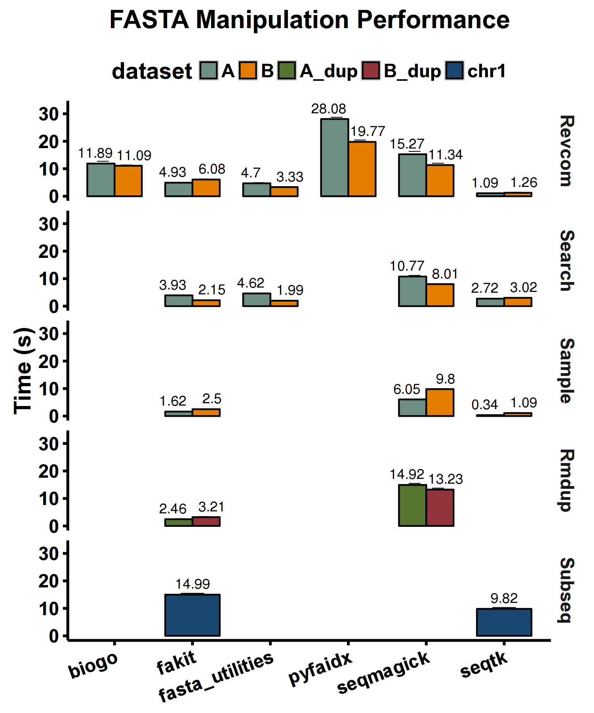
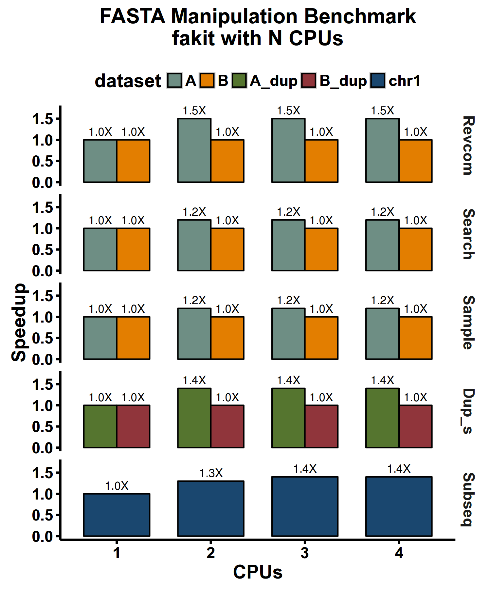

fakit - Swiss army knife of FASTA format
Documents : http://shenwei356.github.io/fakit
Source code: https://github.com/shenwei356/fakit
Introduction
FASTA is a basic format for storing nucleotide and protein sequences. The manipulation of FASTA file includes converting, clipping, searching, filtering, deduplication, splitting, shuffling, sampling and so on. Existed tools only implemented parts of the functions, and some of them are only available for specific operating systems. Furthermore, the complicated installation process of dependencies packages and running environment also make them less friendly to common users.
Fakit is a cross-platform, efficient, and practical FASTA manipulations tool that is friendly for researchers to complete wide ranges of FASTA file processing. The suite supports plain or gzip-compressed input and output from either standard stream or files, therefore, it could be easily used in pipelines.
Features
- Cross-platform (Linux/Windows/Mac OS X/OpenBSD/FreeBSD, see download)
- Light weight and out-of-the-box, no dependencies, no compilation, no configuration (see download)
- Fast (see benchmark), multiple-threads supported (see benchmark).
- Practical functions supported by 14 subcommands (see subcommands and usage )
- Well documented (detailed usage and benchmark )
- Support STDIN and gziped input/output file, easy being used in pipe
- Support custom sequence ID regular expression (especially useful for quering with ID list)
- Reproducible results (configurable rand seed in
sampleandshuffle) - Well organized source code, friendly to use and easy to extend.
Features comparison
| Features | fakit | fasta_utilities | fastx_toolkit | pyfaidx | seqmagick | seqtk |
|---|---|---|---|---|---|---|
| Cross-platform | Yes | Partly | Partly | Yes | Yes | Yes |
| Mutli-line FASTA | Yes | Yes | -- | Yes | Yes | Yes |
| Validate bases | Yes | -- | Yes | Yes | -- | -- |
| Recognize RNA | Yes | Yes | -- | -- | Yes | Yes |
| Read STDIN | Yes | Yes | Yes | -- | Yes | Yes |
| Read gzip | Yes | Yes | -- | -- | Yes | Yes |
| Write gzip | Yes | -- | -- | -- | Yes | -- |
| Search by motifs | Yes | Yes | -- | -- | Yes | Yes |
| Sample seqs | Yes | Yes | -- | -- | Yes | Yes |
| Subseq | Yes | Yes | -- | Yes | Yes | Yes |
| Deduplicate seqs | Yes | -- | -- | -- | Partly | -- |
| Split seqs | Yes | Yes | -- | Partly | -- | -- |
| Split by seq | Yes | -- | Yes | Yes | -- | -- |
| Shuffle seqs | Yes | -- | -- | -- | -- | -- |
| Sort seqs | Yes | Yes | -- | -- | Yes | -- |
| Locate motifs | Yes | -- | -- | -- | -- | -- |
| Common seqs | Yes | -- | -- | -- | -- | -- |
| Clean bases | Yes | Yes | Yes | Yes | -- | -- |
| Transcribe | Yes | Yes | Yes | Yes | Yes | Yes |
| Translate | -- | Yes | Yes | Yes | Yes | -- |
| Size select | Indirect | Yes | -- | Yes | Yes | -- |
| Rename head | -- | Yes | -- | -- | Yes | Yes |
Subcommands
Sequence and subsequence
seqtransform sequences (revserse, complement, extract ID...)subseqget subsequences by region/gtf/bed, including flanking sequencesslidingsliding sequences, circle genome supportedstatsimple statistics of FASTA files
Format conversion
fa2tabcovert FASTA to tabular format (and length/GC content/GC skew) to filter and sorttab2facovert tabular format to FASTA format
Searching
grepsearch sequences by pattern(s) of name or sequence motifslocatelocate subsequences/motifs
Set operations
rmdupremove duplicated sequences by id/name/sequencecommonfind common sequences of multiple files by id/name/sequencesplitsplit sequences into files by id/seq region/size/partssamplesample sequences by number or proportion
Ordering
shuffleshuffle sequencessortsort sequences by id/name/sequence
Global Flags
--alphabet-guess-seq-length int length of sequence prefix of the first FASTA record based on which fakit guesses the sequence type (default 10000)
-c, --chunk-size int chunk size (attention: unit is FASTA records not lines) (default 1000)
--id-ncbi FASTA head is NCBI-style, e.g. >gi|110645304|ref|NC_002516.2| Pseud...
--id-regexp string regular expression for parsing ID (default "^([^\\s]+)\\s?")
-w, --line-width int line width (0 for no wrap) (default 60)
-o, --out-file string out file ("-" for stdout, suffix .gz for gzipped out) (default "-")
--quiet be quiet and do not show extra information
-t, --seq-type string sequence type (dna|rna|protein|unlimit|auto) (for auto, it automatically detect by the first sequence) (default "auto")
-j, --threads int number of CPUs. (default value depends on your device) (default 4)
Usage && Examples
Benchmark
Details: http://shenwei356.github.io/fakit/benchmark/
Performance comparison with other tools
All tests were repeated 4 times

Speedup with multi-threads

Contact
Email me for any problem when using fakit. shenwei356(at)gmail.com
Create an issue to report bugs, propose new functions or ask for help.